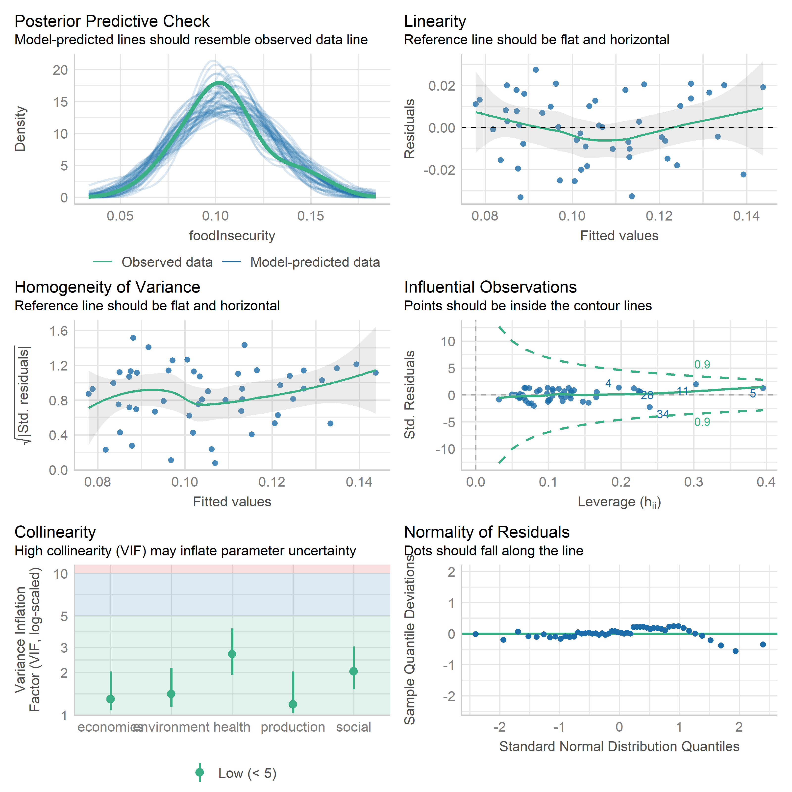
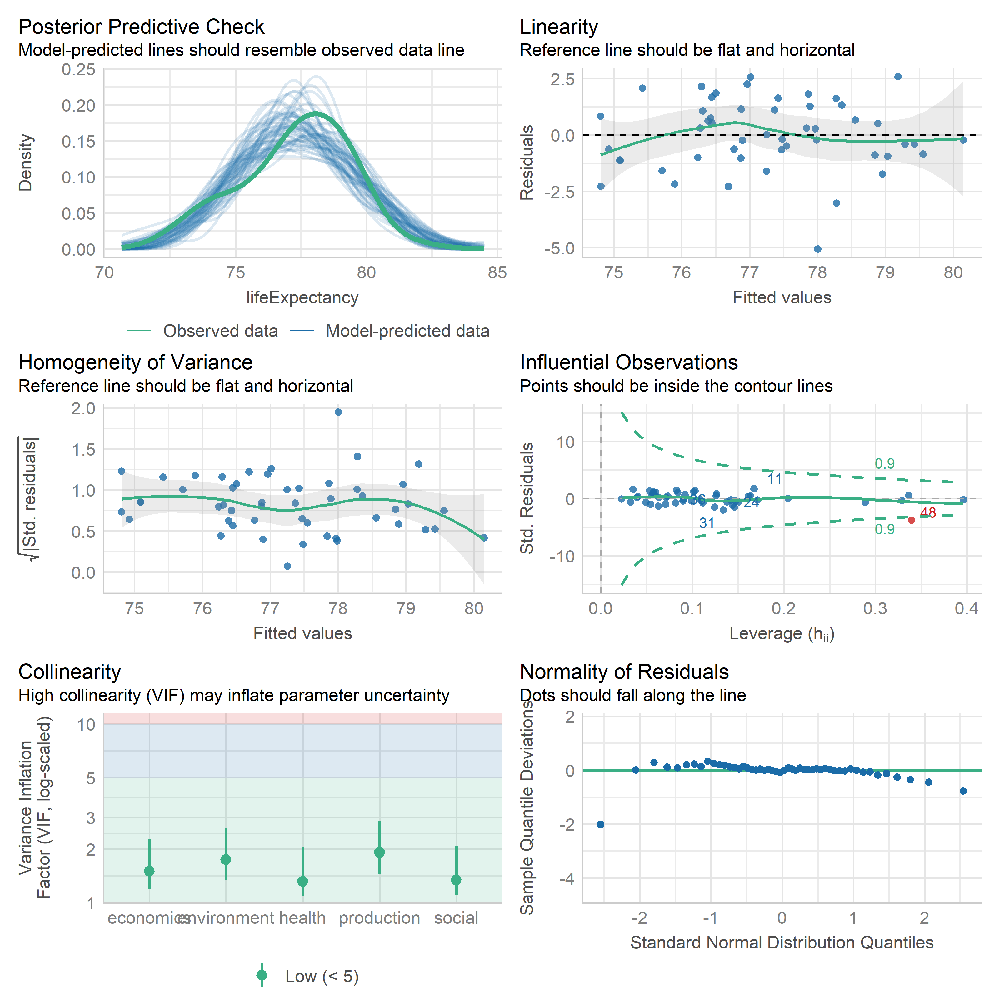
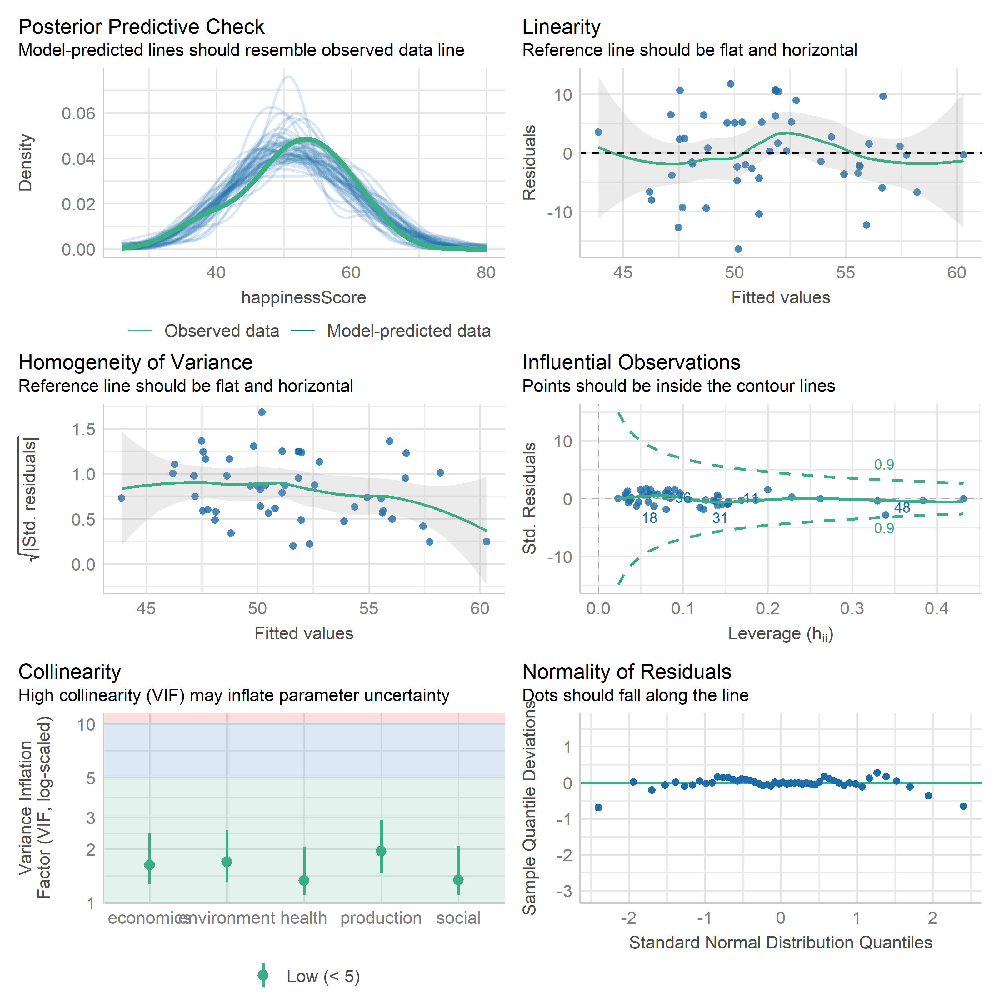

*Setup complete*Validation
1 Introduction
The goal here is to use our five tentative dimension scores as predictors to compare against other established metrics:
- Food security index, overall and/or child (Feeding America, Map the Meal Gap)
- Health outcomes (UW county health rankings)
- Life expectancy, or premature age-adjusted mortality (UW rankings)
- Other ideas: a food affordability index, happiness index, happy planet index?
To Add:
- cite Schneider 2023 (Schneider et al. 2023)
- WLS regression to get deviations of region and income group weighted means from global weighted mean
Code
pacman::p_load(
dplyr,
purrr,
stringr,
tidyr
)
# Load sm_data
sm_data <- readRDS('data/sm_data.rds')
# Load state fips key to join other datasets
state_key <- sm_data[['state_key']] %>%
select(state, state_code)
# Load cleaned aggregated data for all levels of regresion
minmax_geo <- readRDS('data/minmax_geo_all_levels.rds')
get_str(minmax_geo)
# Reduce to just dimension scores, and remove prefix
dimension_scores <- minmax_geo %>%
select(state, starts_with('dimen')) %>%
setNames(c(str_remove(names(.), 'dimen_')))
get_str(dimension_scores)
# Pull raw metrics data
metrics_df <- readRDS('data/metrics_df.rds')
get_str(metrics_df)
# Pull validation variables out of sm_data, wrangle them to match metrics_df
validation_vars <- sm_data$metadata %>%
select(variable_name, metric, definition, source) %>%
filter(variable_name %in% c(
'foodInsecurity',
'communityEnvRank',
'happinessScore',
'wellbeingRank',
'workEnvRank',
'foodEnvironmentIndex',
'lifeExpectancy'
)) %>%
pull(variable_name)
validation_vars
# Get subset of metrics for our validation variables, get latest year only
validation_metrics <- sm_data$metrics %>%
filter(
variable_name %in% validation_vars,
!is.na(value),
str_length(fips) == 2
) %>%
get_latest_year()
get_str(validation_metrics)
# All are available in 2024
# Pivot wider, also get rid of trailing year
validation_metrics <- validation_metrics %>%
pivot_wider(
id_cols = fips,
names_from = variable_name,
values_from = value
) %>%
setNames(c(str_remove(names(.), '_2024'))) %>%
mutate(across(!fips, as.numeric))
get_str(validation_metrics)
# 00 US is missing a lot obviously
# 11 DC is the other one with missing data
# We will just filter down to 50 states to match metrics_df
# Combine validation variables with our dimension scores using state key as the
# bridge. Also remove DC (don't have validation metrics there)
key <- sm_data$state_key %>%
select(state, fips = state_code)
dat <- dimension_scores %>%
left_join(key) %>%
left_join(validation_metrics) %>%
as.data.frame() %>%
filter(state != 'DC') %>%
select(-fips)
# Check it out
get_str(dat)
skimr::skim(dat)
# Looks good2 Food Insecurity
Code
pacman::p_load(
performance,
AER,
sandwich,
sjPlot,
htmltools
)
lm1 <- lm(
foodInsecurity ~ economics + environment + health + production + social,
data = dat
)| food Insecurity | |||
| Predictors | Estimates | CI | p |
| (Intercept) | 0.155 | 0.112 – 0.198 | <0.001 |
| economics | -0.178 | -0.326 – -0.029 | 0.020 |
| environment | 0.025 | -0.091 – 0.141 | 0.665 |
| health | -0.064 | -0.170 – 0.042 | 0.233 |
| production | 0.075 | -0.020 – 0.170 | 0.118 |
| social | -0.019 | -0.109 – 0.072 | 0.679 |
| Observations | 50 | ||
| R2 / R2 adjusted | 0.197 / 0.106 | ||
Code
check_model(lm1)
Not the worst residuals plots I’ve seen, but there are signs of heteroskedasticity and a scoche of non-linearity. Let’s explore heteroskedasticity:
Code
lmtest::bptest(lm1)
studentized Breusch-Pagan test
data: lm1
BP = 9.6567, df = 5, p-value = 0.08557BP test is just barely showing significant result for heteroskedasticity. Let’s try using robust standard errors:
| food Insecurity | |||
| Predictors | Estimates | CI | p |
| (Intercept) | 0.155 | 0.101 – 0.209 | <0.001 |
| economics | -0.178 | -0.367 – 0.011 | 0.064 |
| environment | 0.025 | -0.104 – 0.154 | 0.699 |
| health | -0.064 | -0.195 – 0.068 | 0.335 |
| production | 0.075 | -0.005 – 0.155 | 0.065 |
| social | -0.019 | -0.138 – 0.100 | 0.753 |
| Observations | 50 | ||
| R2 / R2 adjusted | 0.197 / 0.106 | ||
Robust standard errors brought economics closer, but none of our dimensions significantly predict food insecurity, nor does the model explain a meaningful amount of variance.
3 Life Expectancy
Code
lm2 <- lm(
lifeExpectancy ~ economics + environment + health + production + social,
data = dat
)| life Expectancy | |||
| Predictors | Estimates | CI | p |
| (Intercept) | 69.648 | 66.396 – 72.900 | <0.001 |
| economics | 20.683 | 9.409 – 31.957 | 0.001 |
| environment | -2.077 | -10.858 – 6.705 | 0.636 |
| health | 10.426 | 2.368 – 18.484 | 0.012 |
| production | -4.390 | -11.578 – 2.799 | 0.225 |
| social | 1.964 | -4.899 – 8.826 | 0.567 |
| Observations | 50 | ||
| R2 / R2 adjusted | 0.405 / 0.337 | ||
Code
check_model(lm2)
The influential observations plot shows that record 48 (West Virginia) is poorly predicted, and has outsized influence on the model.
It also looks like heteroskedasticity is a bigger issue here. Let’s check it and use robust SEs again if it is:
Code
lmtest::bptest(lm2)
studentized Breusch-Pagan test
data: lm2
BP = 11.581, df = 5, p-value = 0.041Code
vcov <- vcovHC(lm2, type = 'HC3')| life Expectancy | |||
| Predictors | Estimates | CI | p |
| (Intercept) | 69.648 | 66.634 – 72.663 | <0.001 |
| economics | 20.683 | 11.715 – 29.651 | <0.001 |
| environment | -2.077 | -10.143 – 5.989 | 0.606 |
| health | 10.426 | -7.126 – 27.978 | 0.238 |
| production | -4.390 | -8.803 – 0.023 | 0.051 |
| social | 1.964 | -14.028 – 17.955 | 0.806 |
| Observations | 50 | ||
| R2 / R2 adjusted | 0.405 / 0.337 | ||
When using robust errors, the health dimension falls off and we are left with only economics as a significant predictor of life expectancy. That being said, the model is explaining 35% of the variance in life expectancy, which is surprisingly strong. I suspect some strong omitted variable bias here, with GDP being a primary suspect.
4 Food Environment Index
Code
lm3 <- lm(
foodEnvironmentIndex ~ economics + environment + health + production + social,
data = dat
)| food Environment Index | |||
| Predictors | Estimates | CI | p |
| (Intercept) | 2.993 | 0.751 – 5.235 | 0.010 |
| economics | 11.206 | 3.434 – 18.978 | 0.006 |
| environment | 1.520 | -4.534 – 7.573 | 0.615 |
| health | 6.610 | 1.055 – 12.165 | 0.021 |
| production | -5.960 | -10.916 – -1.005 | 0.020 |
| social | 0.838 | -3.892 – 5.569 | 0.723 |
| Observations | 50 | ||
| R2 / R2 adjusted | 0.347 / 0.273 | ||
Code
bptest(lm3)
studentized Breusch-Pagan test
data: lm3
BP = 5.6531, df = 5, p-value = 0.3414Code
check_model(lm3)
The Food Environment Index Regression does not show heteroskedasticity, but may well have some non-linear relationships given the residual plots. Health and economics are significant predictors, with a pretty healthy \(R^2\).
Let’s try this one again with a random forest instead of linear model:
Code
pacman::p_load(
caret,
ranger,
glmnet
)
# Split data 60/40
set.seed(42)
indices <- createDataPartition(dat$foodEnvironmentIndex, p = 0.60, list = FALSE)
training_data <- dat[indices, ]
testing_data <- dat[-indices,]
my_folds <- createFolds(training_data$foodEnvironmentIndex, k = 5, list = TRUE)
# Control
my_control <- trainControl(
method = 'cv',
number = 5,
verboseIter = TRUE,
index = my_folds
)
# Check for zero variance or near zero variance indicators
nearZeroVar(dat, names = TRUE, saveMetrics = TRUE)
# All clear4.1 GLMnet
Code
set.seed(42)
food_env_glmnet <- train(
foodEnvironmentIndex ~ economics + environment + health + production + social,
data = training_data,
tuneGrid = expand.grid(
alpha = seq(0.1, 1, length = 5),
lambda = seq(0.0001, 0.1, length = 100)
),
method = "glmnet",
trControl = my_control,
preProcess = c('zv', 'center', 'scale')
)Code
importance <- varImp(food_env_glmnet, scale = TRUE)
plot(importance)
4.2 Random Forest
Code
set.seed(42)
food_env_rf <- train(
foodEnvironmentIndex ~ production + social + health + economics + environment,
data = training_data,
tuneLength = 7,
method = "ranger",
trControl = my_control,
importance = 'impurity'
)OOB prediction error (MSE): 1.592351
Code
importance <- varImp(food_env_rf, scale = TRUE)
plot(importance)
5 Happiness Score
Code
lm4 <- lm(
happinessScore ~ economics + environment + health + production + social,
data = dat
)| happiness Score | |||
| Predictors | Estimates | CI | p |
| (Intercept) | 34.743 | 20.931 – 48.556 | <0.001 |
| economics | 75.244 | 27.361 – 123.128 | 0.003 |
| environment | -8.884 | -46.180 – 28.412 | 0.634 |
| health | 8.618 | -25.605 – 42.841 | 0.614 |
| production | -20.755 | -51.286 – 9.776 | 0.178 |
| social | 9.553 | -19.593 – 38.698 | 0.512 |
| Observations | 50 | ||
| R2 / R2 adjusted | 0.229 / 0.142 | ||
Code
check_model(lm4)
The model looks pretty reasonable here. The model does not explain a significant amount of variance on the whole, but economics still shows up as the only significant predictor of the validation variable.
6 To Do
- Add GDP and population as covariates in all analyses.
- Add non-linear analyses to each analysis for which linear models are ill-suited
- Package regression outputs more cleanly with stargazer or kable
References
Schneider, Kate R., Jessica Fanzo, Lawrence Haddad, Mario Herrero, Jose Rosero Moncayo, Anna Herforth, Roseline Remans, et al. 2023. “The State of Food Systems Worldwide in the Countdown to 2030.” Nature Food 4 (12): 1090–110. https://doi.org/10.1038/s43016-023-00885-9.